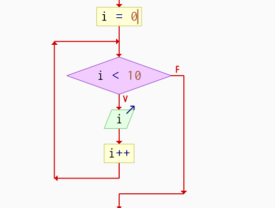
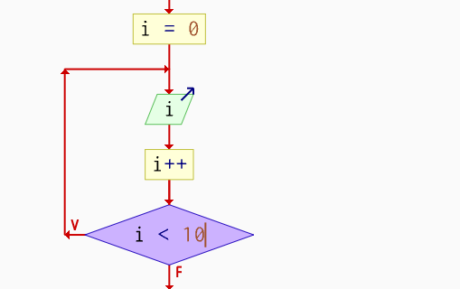
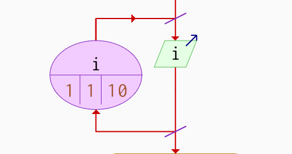

while, do-while o for,
y aplicar mecanismos como contadores, banderas, break, continue y
bucles anidados.
Repetir con una condición
Los bucles permiten que un bloque de código se ejecute repetidamente, ya sea un número fijo de veces o mientras se cumpla una condición.
Idea central
Todo ciclo debe tener una forma clara de avanzar hacia su condición de salida.
Determinados
Se conoce o se puede calcular cuántas veces se repetirá el proceso.
Control típico: contador.
Sentencia representativa: for.
Indeterminados
El número de repeticiones depende de una condición o de una bandera.
Control típico: condición lógica.
Sentencias: while y do-while.
Mixtos
Combinan contador con condición o bandera para detener el proceso por más de un criterio.
Ejemplo: máximo 3 intentos o hasta acertar la clave.
while · PRECONDICIÓN
En while, la condición se evalúa antes de cada iteración.
Si es falsa al inicio, el cuerpo no se ejecuta ninguna vez.
#include <stdio.h> int main() { int contador = 1; while (contador <= 5) { printf("%d ", contador); contador++; } printf("\nFin del bucle while.\n"); return 0; }
contador++ puede producir un bucle infinito.

do-while · POSTCONDICIÓN
La condición se evalúa después de ejecutar el cuerpo. Por eso,
un do-while se ejecuta al menos una vez.
char opcion; do { printf("¿Continuar? (s/n): "); scanf(" %c", &opcion); } while (opcion == 's' || opcion == 'S');
do-while termina con punto y coma después del while.
for · CICLO CON CONTADOR
El for es ideal cuando se conoce el número de repeticiones.
Reúne en una sola línea la inicialización, la condición y la actualización.
#include <stdio.h> int main() { for (int i = 0; i < 4; i++) { printf("Iteración %d\n", i); } printf("Fin del bucle for.\n"); return 0; }
i = 0i < 4printf(...)i++
for concentra los elementos del contador y repite mientras la condición sea verdadera.
for puede expresarse con un while,
pero suele ser más compacto y legible cuando el control principal es un contador.
| Ciclo | Cuándo evalúa | Ejecución mínima | Control típico | Cuándo conviene |
|---|---|---|---|---|
while |
Antes del cuerpo | 0 veces | Condición / bandera | Cuando no sabes cuántas repeticiones habrá y quizá no deba ejecutarse. |
do-while |
Después del cuerpo | 1 vez | Condición / bandera | Menús, validaciones o procesos que deben ejecutarse al menos una vez. |
for |
Antes del cuerpo | 0 veces | Contador | Cuando conoces o puedes calcular el número de repeticiones. |
break · salida anticipada
Termina inmediatamente el bucle más interno donde se encuentra.
for (int i = 1; i <= 10; i++) { if (i == 6) { break; } printf("%d ", i); }
Salida: 1 2 3 4 5
continue · omitir una iteración
Omite el resto del cuerpo en la iteración actual y continúa con la siguiente.
for (int i = 1; i <= 5; i++) { if (i == 3) { continue; } printf("%d ", i); }
Salida: 1 2 4 5
Un bucle puede estar dentro de otro. Esto es útil cuando existen dos dimensiones lógicas, como filas/columnas, grupos/alumnos, intentos/validaciones o combinaciones de índices.
Matriz 3 × 3
int matriz[3][3] = { {1,2,3}, {4,5,6}, {7,8,9} }; for (int i = 0; i < 3; i++) { for (int j = 0; j < 3; j++) { printf("%d ", matriz[i][j]); } printf("\n"); }
Ejemplo mixto: máximo 3 intentos
Este caso combina un contador con una condición de éxito.
const int CLAVE = 2025; int intento; for (int i = 0; i < 3; i++) { printf("Ingresa la clave: "); scanf("%d", &intento); if (intento == CLAVE) { printf("Acceso concedido.\n"); break; } printf("Incorrecta. Quedan %d intentos.\n", 2 - i); }
N × M realiza
aproximadamente N × M iteraciones. Hay que tener cuidado cuando ambos valores son grandes.
Contador
Cuenta cuántas veces ocurre algo.
contador++;
Acumulador
Va sumando valores durante el ciclo.
suma += valor;
Bandera
Representa un estado lógico que puede detener o controlar el ciclo.
encontrado = 1;
while, do-while y
for depende principalmente de cuándo se evalúa la condición y de
si conocemos o no el número de repeticiones.
“Programar no es escribir instrucciones. Es enseñarle a una máquina a repetir con inteligencia.”
— Prof. Pedro Núñez Yepiz